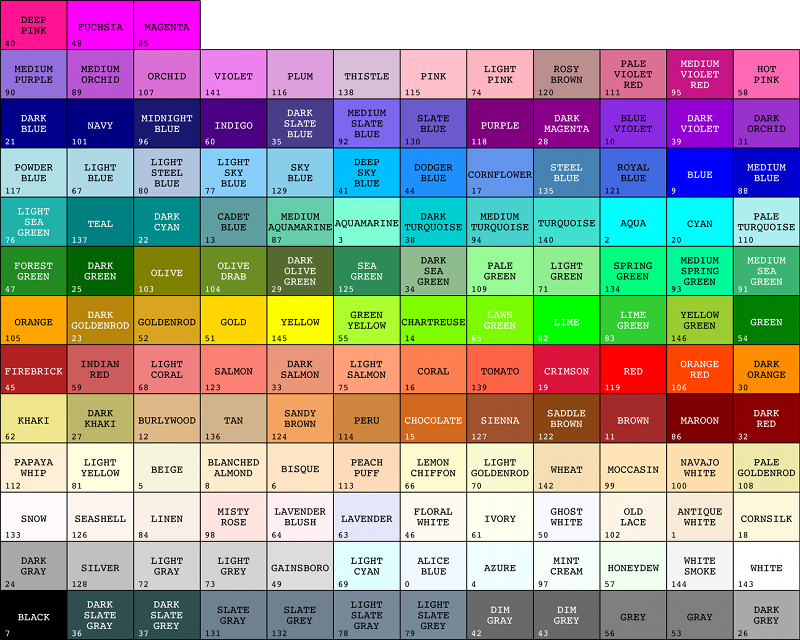

You can format IDL Graphics lines and symbols using properties or the string argument Format .
For example, to set the plotting symbol to a plus character, the plotting color to green, the linestyle to a dash-dot-dot-dot line, and the line thickness to a value of 2, you could use the Format string argument:
p = PLOT(/TEST, '+g-:2')
Note: When using a Format string, you can include any combination of modifiers, in any order.
You could also set these individual properties:
p1 = PLOT(/TEST, SYMBOL='+', COLOR='green', LINESTYLE='-:', THICK=2)
IDL is case-sensitive when interpreting the Format argument and associated keyword strings.
The following table lists the single characters that you can use as the color modifier in either the COLOR property or the Format string argument. You must use the lower-case character.
| Color Name | Character |
|---|---|
| Blue | b |
| Green | g |
| Red | r |
| Cyan | c |
| Magenta | m |
| Yellow | y |
| Black | k |
| White | w |
When setting the COLOR property, you can also use any of the string values defined by the !COLOR system variable, as shown in the following image:

The following table lists the IDL symbol values. For the SYMBOL property you may use an index value, the short name, or the long name. For the Format string argument you may use the short name.
Note: If you use a Format string that contains a symbol but no linestyle (for example, 'd'), the linestyle value is set to 6 (no line is drawn).
The following table lists the index values, strings, and characters you can use with the LINESTYLE property, and the equivalent characters and strings you can use in the Format string argument.
| Index | LINESTYLE Property | Format Argument | Description |
|---|---|---|---|
| 0 | 'solid_line', '-'(dash) | '-' (dash) | solid line |
| 1 | 'dot', ':'(colon) | ':'(colon) | dotted |
| 2 | 'dash', '--' (double dashes) | '--' (double dashes) | dashed |
| 3 | 'dash_dot', '-.' | '-.' | dash dot |
| 4 | 'dash_dot_dot_dot', '-:' | '-:' | dash dot dot dot |
| 5 | 'long_dash', '__' (two underscores) | '__' (double underscores) | long dash |
| 6 | 'none', ' ' (space) | ' ' (space) | no line |
Note: If you use the LINESTYLE value or Format string '-.', the linestyle is set to dash-dot and the plot symbol is not set.
You can specify a line thickness value (from 0 to 10) using the THICK property, or by including a value in the Format string. The default line thickness is 1 point.